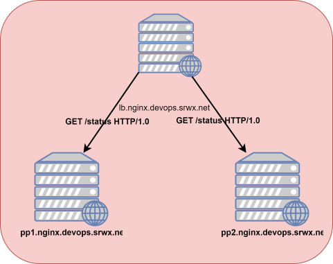
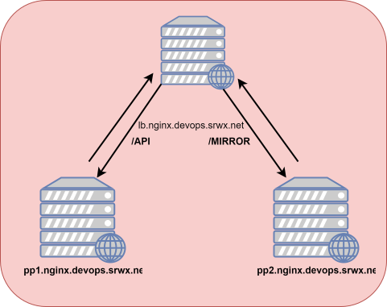
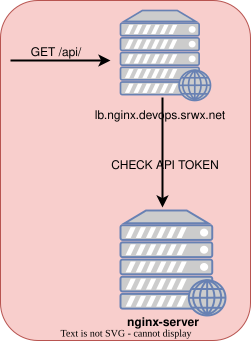

———– redirect site to yandex.ru /etc/nginx/sites-enebled
server listen 80;
server_nane nginx.srwx.net;
return 301 “http://ya.ru”;
test config
nginx -t
curl -D - -o /dev/null -s http://nginx.srwx.net
cat etc/nginx/sites-enabled
nginx reload
Location
location /test {
return 201 "TEST";
}
password and user
location /restricted {
auth_basic "Restrictred";
auth_basic_user_file .htpasswd;
}
proxy to yandex on main domain
location /admin {
proxy_pass http://ya.ru;
}
balance beetwen servers
upstream app {
server 127.0.0.1:8080;
server 10.10.21.12:8080;
}
server
listen 80 default_server;
server_nane nginx.srwx.net;
location /admin {
proxy_pass http://app;
}
}
Makes the site faster and gives the static css
upstream app {
server 127.0.0.1:8080;
server 10.10.21.12:8080;
}
server
listen 80 default_server;
server_nane nginx.srwx.net;
location /css {
root /var/www/css;
}
location /admin {
proxy_pass http://app;
}
}
upsteam app {
server app1:80
server app2:80
}
server {
listen 80;
server_name _;
location / {
proxy_pass http://app;
}
}
Check Module

Install the prerequisites:
sudo apt install curl gnupg2 ca-certificates lsb-release ubuntu-keyring
Import an official nginx signing key so apt could verify the packages authenticity. Fetch the key:
curl https://nginx.org/keys/nginx_signing.key | gpg --dearmor \
| sudo tee /usr/share/keyrings/nginx-archive-keyring.gpg >/dev/null
Verify that the downloaded file contains the proper key:
gpg --dry-run --quiet --no-keyring --import --import-options import-show /usr/share/keyrings/nginx-archive-keyring.gpg
The output should contain the full fingerprint 573BFD6B3D8FBC641079A6ABABF5BD827BD9BF62 as follows:
pub rsa2048 2011-08-19 [SC] [expires: 2024-06-14]
573BFD6B3D8FBC641079A6ABABF5BD827BD9BF62
uid nginx signing key <signing-key@nginx.com>
If the fingerprint is different, remove the file.
To set up the apt repository for stable nginx packages, run the following command:
echo "deb [signed-by=/usr/share/keyrings/nginx-archive-keyring.gpg] \
http://nginx.org/packages/ubuntu `lsb_release -cs` nginx" \
| sudo tee /etc/apt/sources.list.d/nginx.list
If you would like to use mainline nginx packages, run the following command instead:
echo "deb [signed-by=/usr/share/keyrings/nginx-archive-keyring.gpg] \
http://nginx.org/packages/mainline/ubuntu `lsb_release -cs` nginx" \
| sudo tee /etc/apt/sources.list.d/nginx.list
Set up repository pinning to prefer our packages over distribution-provided ones:
echo -e "Package: *\nPin: origin nginx.org\nPin: release o=nginx\nPin-Priority: 900\n" \
| sudo tee /etc/apt/preferences.d/99nginx
To install nginx, run the following commands:
sudo apt update
sudo apt install nginx
test
nginx -v
apt-get build-dep nginx
Create repository source file for nginx
nano /etc/apt/sources.list.d/nginx.list
deb-src http://nginx.org/packages/mainline/ ubuntu bionic nginx
apt update
apt-get build-dep nginx
apt-get source nginx
apt install git
git clone https://github.com/yaoweibin/nginx_upstream_check_module
cd nginx_upstream_check_module
take last version
patch -p < /root/nginx_http_upsteam_check_module/check
patch -p < /root/nginx_http_upsteam_check_module/check_1.14.0+.patch
add to
nano debian/rules
add to end add-module-/root/nginx_http_upsteam_check_module
CFLAGS="" .. .. .. .. .. ...
.. .. .. .. .. .. --add-module-/root/nginx_http_upsteam_check_module
dpkg-buildpackage -uc -us -b
now i can add to repository
dpkg -i nginx_1.15.11.1-bionic.amd64.deb
cd /etc/nginx/conf.d/
nano default.conf
After config command nginx reload
upstream app {
server app1.nginx.devops.srwx.net:80
server app2.nginx.devops.srwx.net:80
check interval=3000 rise=2 fall=5 timeout=1000 type=http;
check_http_send "GET / HTTP/1.0\r\n\r\n";
check_http_expect_alive http_2xx http_3xx;
}
server {
listen 80;
server_name _;
location / {
proxy_pass http://app;
}
}
Test for Loadbalance
curl -D - -s http://lb.nginx.devops.srwx.net
on slave server app1 and app2
server {
listen 80;
service_name _;
location / {
return 200 "app1\n";
}
}
Nginx Mirroring Module

upstream appprod {
server app1.nginx.devops.srwx.net:80
}
upstream appdev {
server app2.nginx.devops.srwx.net:80
}
server {
listen 80;
server_name _;
location / {
proxy_pass http://appprod;
mirror /mirror;
}
location /mirror {
proxy_pass http://appdev$request_url;
}
}
dont forget reload nginx
tail -100f /var/log/nginx/access.log
Lua Nginx Module

install nginx nginx-extras
apt install libnginx-mod-http-lua
apt install lua-nginx-redis
Restart Nginx
systemctl restart nginx
upstream appprod {
server app1.nginx.devops.srwx.net:80
}
upstream appdev {
server app2.nginx.devops.srwx.net:80
}
server {
listen 80;
server_name _;
location / {
default_type 'text/html';
content_by_lua '
ngx.say("HELLO")
';
}
location /mirror {
proxy_pass http://appdev$request_url;
}
}
upstream appprod {
server app1.nginx.devops.srwx.net:80
}
upstream appdev {
server app2.nginx.devops.srwx.net:80
}
server {
listen 80;
server_name _;
location / {
default_type 'text/html';
content_by_lua '
api_key = ngx.req.get_headers()["X-api-Key"]
if not api_key then
ngx.status = 403
ngx.say("Dont see x-api-key header")
return ngx.exit(403)
end
local redis = require "nginx.redis"
local red = redis:new()
local ok, err = red:connect(127.0.0.1", 6379)
local res, err = red:get(api_key)
if res == ngx.null then
ngx.status = 403
ngx.say("Not authorized")
return ngx.exit(403)
else
ngx.exec("/authorized")
end
';
}
location /authorized {
return 200 "Good to go";
}
}
reload nginx ’nginx reload
install redis-server
install redis-server
redis-cli
curl -H 'X-api-key: 1234' -D - -s http://lb.nginx.devops.srw.net
md5 lua.conf
redis-cli
set 34534gr324234fwefa client1
OK
get 34534gr324234fwefa
"client1"
curl -H 'X-api-key: 34534gr324234fwefa' -D - -s http://lb.nginx.devops.srw.net
Backend Balancer
upstream backend {
server 172.16.1.100;
server 172.16.1.101;
}
server {
listen 80;
server_name http.srwx.net;
location / {
proxy_set_header Host "http.srwx.net";
proxy_pass http://backend;
}
}